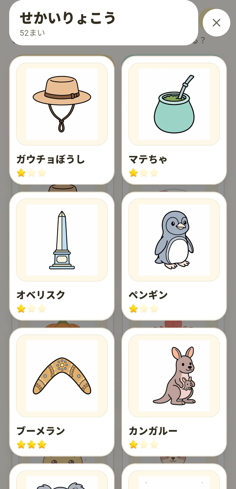
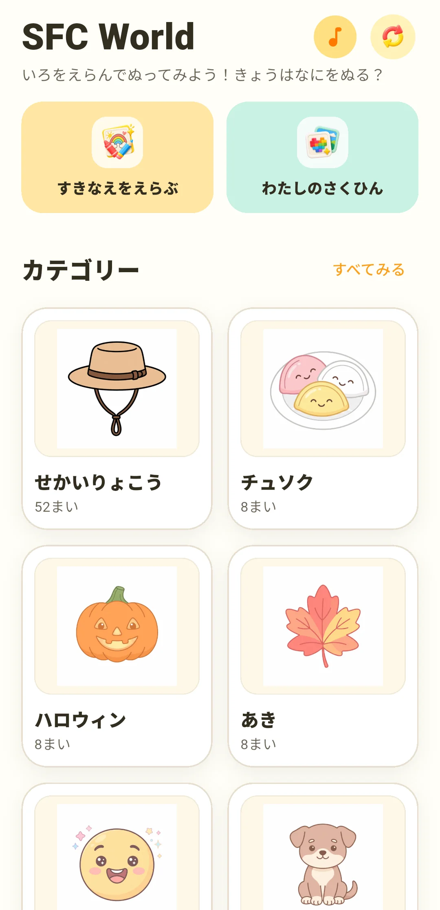
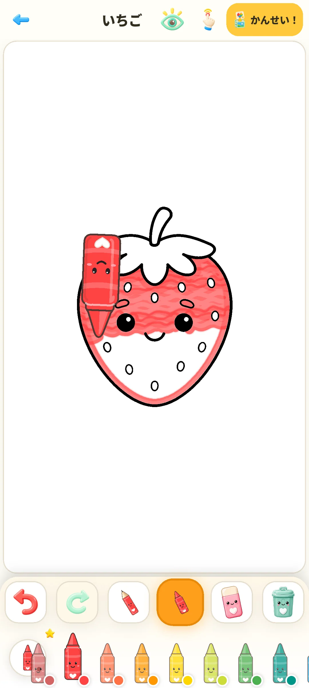
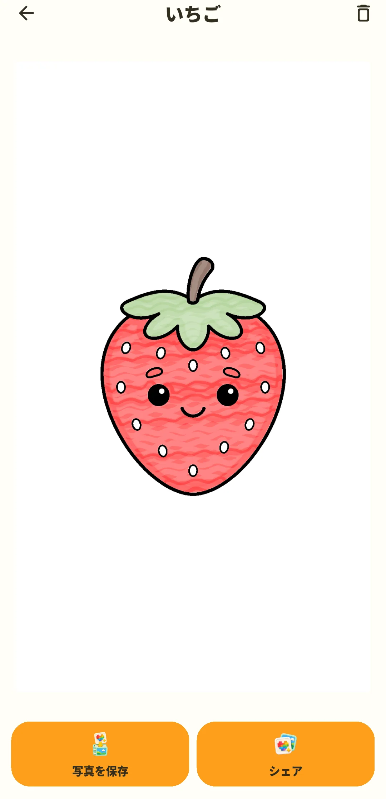

最初のひとぬりから楽しい道具
えんぴつやクレヨンを切り替え、太さと色を選べます。消したり、元に戻したり、自由にやり直せます。
小さなキャンバスに大きなアイデア
好きな絵をえらび、かわいいえんぴつやクレヨンで、ゆったりした時間を自分だけのカラフルな作品に変えましょう。


 わたしの作品 ♡
わたしの作品 ♡

楽しさを考えたデザイン
大きくてやさしいボタンだから、使い方ではなく絵と色に集中できます。
えんぴつやクレヨンを切り替え、太さと色を選べます。消したり、元に戻したり、自由にやり直せます。
キャンバスを拡大・移動し、ミニマップを見ながら細かい部分もぬれます。
「わたしの作品」に保存し、写真への書き出しや端末の共有機能を使えます。
カラフルな小さな旅
絵をえらび、自由にぬって、できあがった作品を残すまで、子どもにもわかりやすい流れです。
かわいいテーマやカテゴリーを見てみよう。
わくわくする一枚をえらびます。

えんぴつやクレヨンで自由に表現します。

完成した作品を保存して楽しみます。
アカウントは不要で、ユーザーが書き出しや共有を選ばない限り、作品は端末に保存されます。Android版はUnity Adsを通じて子ども向けのコンテキスト広告を表示する場合がありますが、行動ターゲティング広告は使用しません。